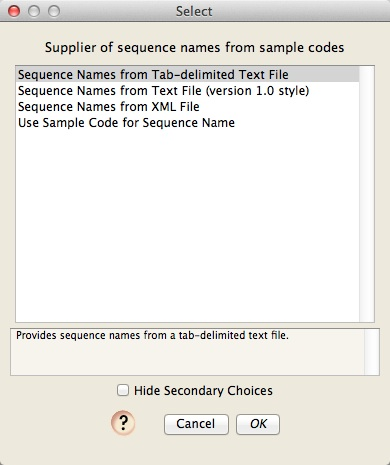

In this tutorial, you will go from chromatograms to having fully processed sequences, with final base calls. Much of what is described here only needs to be done the first time you use Chromaseq.
Initial Setup
First, make sure that you have installed Chromaseq, Phred, and Phrap.
Download the ChromaseqExamples archive, and unzip it. You will have a folder containing two subfolders and two files:
- two folders, each containing some example chromatograms
- a file called "Primers.txt" containing the names and sequences of primers, their direction, and the gene fragment to which they correspond,
- a file called "SampleCodes.txt" showing the correspondence between sample codes and sequence names
You will also need to modify the phredpar.dat file that came with Phred, so that it can accommodate the chromatograms provided in the example. Open up the phredpar.dat file in a simple text editor, and find the line
"BeckmanCEQ" terminator big-dye Beckman_CEQ_2000
and immediately below this add the following two lines:
#Entry below added to accommodate Chromaseq example files
"DT3730POP7{BDv3}.mob" terminator big-dye ABI_373_377
With that done, you are ready to process some chromatograms. We are going to first process the 14 chromatogram files that are in the folder "Chromatograms".
Processing the Chromatograms
Telling Chromaseq how the chromatogram files are named
From the File>Open Other submenu in Mesquite, choose "Process Chromatograms Files in Directory". You will be first asked to choose the rules used to name chromatogram files.

If this is the first time Chromaseq has been used on this computer, there will be no naming rules. Let's presume that is the case. To create a new naming rule, touch on the "Edit Naming Rules" button, and you should see a dialog box, that helps you manage your various naming rules, like this:
We want to make a new naming rule, so press the "New" button, and give the rule the name "ExamplesNamingRule"
You will then be presented with the editor in which you can specify the naming rule:
If you look into the "Chromatograms" folder, you will see that the file names look like this:
A01_A01DNA1120_B1490_411940.ab1
The first 7 characters ("A01_A01") specify the position in the 96-well sequencing plate; we don't care about this; the last bit, "411940", is also not important. The only thing we care about in this is the sample code (which will allow us to figure out what to call the sequences that are created), and the primer name. In this file, the sample code is "1120", and the primer name is "B1490". We need to tell Chromaseq how to find these two items.
As with all the files in that Chromatograms folder, the sample code precedes the primer name. The sample code is bounded by "DNA" and "_". The primer name has a "_" in front of it, and a "_" following it. With those specified in the File Naming Rule dialog box, the naming rule is build. Not surprisingly, the default naming rule matches the file naming format used in these example files.
Press OK, and then Done, and then you will be back to the dialog box used to choose your naming rule. Make sure you choose the rule you just created:
and press OK.
Choosing the method for naming sequences
You will then be asked to choose a module to be used to determine the names to give your processed sequences. There are several choices, three of which require you to have a file that provides a translation between sample codes and sequence names. The last one "Use Sample Code for Sequence Name" simply uses the sample code as the sequence name.

Choose the "Sequence Names from Tab-delimited Text File" option, and press OK. You will then be asked for the location of the file containing the sequence names; use the Browse button to choose the "SampleCodes.txt" file in the ChromaseqExamples folder:
This file is already set up to contain the sample codes (e.g., "1120") and the name that should be applied to sequences from that sample (e.g., "Bembidion perspicuum AZ 1120").
Choosing the file containing information about primers
Next, you will be asked to specify the location of the file that contains information about primers. Choose the "Primers.txt" file in the ChromaseqExamples directory:
And now to make base calls and contigs...
We are getting close to being ready to do the processing. You should now see a dialog box that allows you to set things up for Phred and Phrap.
We won't worry about most of this; the only thing we must do is to tell Chromaseq where the key helper programs it uses, including Phred and Phrap, are located.
Press on the "Phred Phrap Locations & Options..." button, and the dialog will appear that will let you tell Mesquite where the programs are located, and where the Phred parameter file is:

Press the "Browse..." button beside the "Phred, Phrap, & Phd2Fasta" to browse for the folder on your hard disk containing the three programs Chromaseq uses (Phred, Phrap, and Phd2Fasta), all of which must be in the same directory. Do the same for the Phred parameter file ("phredpar.dat"). You should only have to do this once on your computer, unless you move these files to other locations.
Press OK on this "Phred Phrap Locations & Options" dialog, and you will go back to the "Phred/Phrap/Chromaseq Options" dialog box. Press Process, and Chromaseq will then ask you for the directory that contains the chromatogram files to be processed. Find the chromatograms folder:
And press Choose, or OK, as appropriate.
At this point, your computer's terminal shell should start. On a Mac, this will typically be the Terminal application; on Windows, it will be the Cygwin shell if that is what you installed. Phred and Phrap will then start processing the files, and the shell will be filled with the output of these programs. If you switch back to Mesquite, you will notice in the log information about what is happening. For example, here is the full log for processing the Chromatograms folder:
Phred Phrap processing of chromatograms as scripted by Mesquite Processing directory: /ChromaseqExamples/Chromatograms
Using names and codes file: /ChromaseqExamples/SampleCodes.txt
Using primers file: /ChromaseqExamples/Primers.txt
Parameters: Phred Options: -id . -pd . -d
Phrap Options: -new_ace -qual_show 20 -vector_bound 0
Chromaseq Options:
Quality threshold for lower case: 49
Convert multiple-peaks sites to ambiguity codes: true
Minimum secondary peak fraction for ambiguity: 0.3
Trim low quality regions from ends: true
Quality threshold for trim: 20
Trim window length: 10
Trim window threshold: 5
Preparing Bemb perspicuum AZ 1120 (COI)
Preparing Bemb louisella NS 1250 (COI)
Preparing Bemb louisella NS 1250 (28S)
Preparing Bemb perspicuum CA 2320 (28S)
Preparing Bemb paraenulum VA 1856 (COI)
Preparing Bemb perspicuum AZ 1120 (28S)
Preparing Bemb paraenulum VA 1856 (28S)
Number of files prepared: 7
A01_A01DNA1120_B1490_411940.ab1 renamed to DNA1120.b.B1490.ab1
A01_A01DNA1120_Bcoi2R_412036.ab1 renamed to DNA1120.g.Bcoi2R.ab1
C07_C07DNA1250_B1490_208508.ab1 renamed to DNA1250.b.B1490.ab1
C07_C07DNA1250_B2232_208604.ab1 renamed to DNA1250.g.B2232.ab1
C12_C12DNA1250_D3aR_572645.ab1 renamed to DNA1250.g.D3aR.ab1
C12_C12DNA1250_NLF184_572549.ab1 renamed to DNA1250.b.NLF184.ab1
F06_F06DNA2320_D3aR_552091.ab1 renamed to DNA2320.g.D3aR.ab1
F06_F06DNA2320_NLF184_551995.ab1 renamed to DNA2320.b.NLF184.ab1
H05_H05DNA1856_B1490_237723.ab1 renamed to DNA1856.b.B1490.ab1
H05_H05DNA1856_B2232_237819.ab1 renamed to DNA1856.g.B2232.ab1
H07_H07DNA1120_D1_394061.ab1 renamed to DNA1120.b.D1.ab1
H07_H07DNA1120_D3_394157.ab1 renamed to DNA1120.g.D3.ab1
H09_H09DNA1856_D1_237563.ab1 renamed to DNA1856.b.D1.ab1
H09_H09DNA1856_D3_237659.ab1 renamed to DNA1856.g.D3.ab1
Execution of Phred-Phrap command file begun.
....1. Bemb perspicuum AZ 1120 (Phrap)
2. Bemb louisella NS 1250 (Phrap)
3. Bemb louisella NS 1250 (Phrap)
4. Bemb perspicuum CA 2320 (Phrap)
5. Bemb paraenulum VA 1856 (Phrap)
6. Bemb perspicuum AZ 1120 (Phrap)
7. Bemb paraenulum VA 1856 (Phrap)
Phred & Phrap analyses completed.
Post-Phrap processing begins.
Processing ACE file: Bemb louisella NS 1250.ace
C12_C12DNA1250_D3aR_572645.ab1 (rev)
C12_C12DNA1250_NLF184_572549.ab1
Processing ACE file: Bemb paraenulum VA 1856.ace
H09_H09DNA1856_D3_237659.ab1 (rev)
H09_H09DNA1856_D1_237563.ab1
Processing ACE file: Bemb perspicuum AZ 1120.ace
H07_H07DNA1120_D3_394157.ab1 (rev)
H07_H07DNA1120_D1_394061.ab1
Processing ACE file: Bemb perspicuum CA 2320.ace
F06_F06DNA2320_D3aR_552091.ab1 (rev)
F06_F06DNA2320_NLF184_551995.ab1
Processing ACE file: Bemb louisella NS 1250.ace
C07_C07DNA1250_B2232_208604.ab1 (rev)
C07_C07DNA1250_B1490_208508.ab1
Processing ACE file: Bemb paraenulum VA 1856.ace
H05_H05DNA1856_B2232_237819.ab1 (rev)
H05_H05DNA1856_B1490_237723.ab1
Processing ACE file: Bemb perspicuum AZ 1120.ace
A01_A01DNA1120_Bcoi2R_412036.ab1 (rev)
A01_A01DNA1120_B1490_411940.ab1
========================
Phred/Phrap processing report
Multi-read sequences obtained from the following genes and samples:
(28S) -- Bembidion louisella NS 1250
(28S) -- Bembidion paraenulum VA 1856
(28S) -- Bembidion perspicuum AZ 1120
(28S) -- Bembidion perspicuum CA 2320
(COI) -- Bembidion louisella NS 1250
(COI) -- Bembidion paraenulum VA 1856
(COI) -- Bembidion perspicuum AZ 1120
========================
Your log should look like that above.
Eventually, the processing will finish, and Mesquite will import the resulting contigs into a Mesquite project, with one matrix for each gene.
In the example in this tutorial, the chromatograms come from two different genes, and so two matrices will appear in the project once the processing is done, one for 28S rDNA, and one for COI. The last matrix processed will be presented to you, by default in Birds Eye View, and with the bases colored according to the quality score assigned to them by Phred and Phrap. White is high quality, darker greens are moderate quality, and blue is poorest quality:

If you want to see the matrix with the colors being the standard ones for nucleotides, choose Matrix>Color Matrix Cells>Character State, and it should look like this:
We could now align the sequences, and do other things with them, but let's now worry about that now, instead let's look at the contigs and chromatograms in detail.
Examining a contig and its chromatograms
To see the contig for the COI sequence of Bembidion louisella NS 1250 and its chromatograms, touch the view chromatograms tool () on "Bembidion louisella NS 1250". A new window will open, showing you the chromatograms and the contig:
You may see a different part of the sequence than is shown in the above image; Chromaseq centers the view on the base upon which you clicked in the matrix.
Magnifying peaks
To the right of the reads is a close-up window, which shows a magnified view of a few peaks in one of the reads; the section that is being magnified is indicated in the reads by a blue-shaded box:
By default, the bases that are magnified are those in the center of the chromatogram window, and the read that is shown is the source read. The source read is the primary read that Phrap uses in making the base call. Source read for any particular site is that read with a short, brown bar under the peak. As you scroll through the contig, the close-up window will continue to track the source read at the center site.
To see a different region magnified, you can hold down the Option key, and move the mouse over the region you would like magnified.
Navigating through a contig
There are several mechanisms to navigate through a contig. The simplest is to use the scroll bar at the bottom of the window. You can also scroll through the overview window, and then touch on the point of the overview you wish to see in the main part of the chromatogram viewer.
There are also several keyboard commands that can move you quickly through the chromatogram. If you touch the left or right arrow keys, by default Chromaseq will jump to the previous or next "problematic" base. (Note: you may need to touch the mouse on one of the chromatograms before this will work; this is a bug that we hope to fix soon.) Problematic bases include, by default, very low quality bases, sites with a conflict between the source read and a higher-quality read, and so on. You can adjust the sorts of problems you wish to jump between using the Chromatograms>Arrow Keys submenu.
If you touch the up arrow key, you will jump to the start of the contig; touching the down arrow key will jump to the end of the contig.
Making base calls
Now touch on the 'Character Matrix "28S (from Phred/Phrap)"' tab at the start of the Mesquite window. You will then see the matrix of 4 processed sequences of 28S ribosomal DNA. Using the chromatogram tool, touch on the start of the sequence for Bembidion perspicuum 2320. You should see, near the start of the contig, the following section:
Note that the base call by Phred/Phrap/Mesquite is gcgaMaggg, but it looks as if the "M" really should be two separate bases, AC. Thus, the base calls should probably be gcgaacaggg. To change the M to AC, you can do the following.
First, you will need to create a new base here. Use the Insert Base tool (), and touch it between the M and the a on the bottom row:
This will open up a new base (left, below), which you can then change by typing the letter for the base you wish to set it to, for example, "c" (right, below)
You can then touch on the M to select it, and then type an "a" to change it to an A (left, below). If you click somewhere else in the window to select the base you were editing, you will more clearly see that this has revised the sequence to gcgaacaggg (right, below). Bases you have manually edited are highlighted in yellow.
If you look in the data matrix itself, and turn off Bird's Eye View (by unchecking it under Matrix>Display>Bird's Eye View), you will see the new base calls highlighted in yellow:
Visualizing and removing primer sites
To see where primer sites are in your sequence, you will need to ask Chromaseq to search for and show them. To do this, choose Chromatograms>Primers>Show Primer Matches. You will be asked for the location of the primer text file (for details, see the Primer & Gene Information page), and either browse for the file or type in its path.
If you do this for the Bemb perspicuum AZ 1120 sequence in the COI matrix, and look at the start of the contig, you will see the B1490 primer drawn in gray letters over the peaks near the start of the sequence; you can see the match between the primer sequence and the bases in that read.
(Note: if you want Chromaseq to show the primers for the next chromatogram window you open and subsequent windows, you will need to choose Chromatogram>Save Current Settings as Defaults after you choose Chromatograms>Primers>Show Primer Matches.)
To remove this region from the sequence in the matrix, first select the primer region in the chromatogram viewer. Do this by touching on the start of the primer, then, while holding down the Shift key, touch on the last base of the primer:
With those bases selected, if you choose Chromatograms>Convert Selected to Gaps, those sites will be converted to gaps in both the chromatogram viewer and in the data matrix: